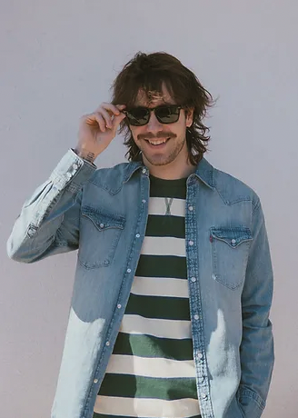

Hey, glad you stopped by! I'm all about the joy of cracking
puzzles wide open, whether it's deciphering mind-bending riddles
or diving into the endless creativity of Minecraft.
There's something oddly satisfying about solving problems
and building extraordinary virtual worlds. When I'm not glued
to my screen, I'm most likely rock-climbing, lost
in the rhythm of my favorite tunes, or trying something
new at a restaurant. These hobbies aren't just pastimes;
they're my way of tapping into my creative side and
having a blast while doing it. Plus, I adore anything to
do with Photoshop and Illustrator. Both in my own time
and in a professional setting the Adobe Creative Suite
is akin to playing a video game and I've been in love with
the ability to create since the 6th grade. For me, it's all
about finding the fun in every moment and letting my
ability to create take charge.
© 2023 by Aidan Salomon.